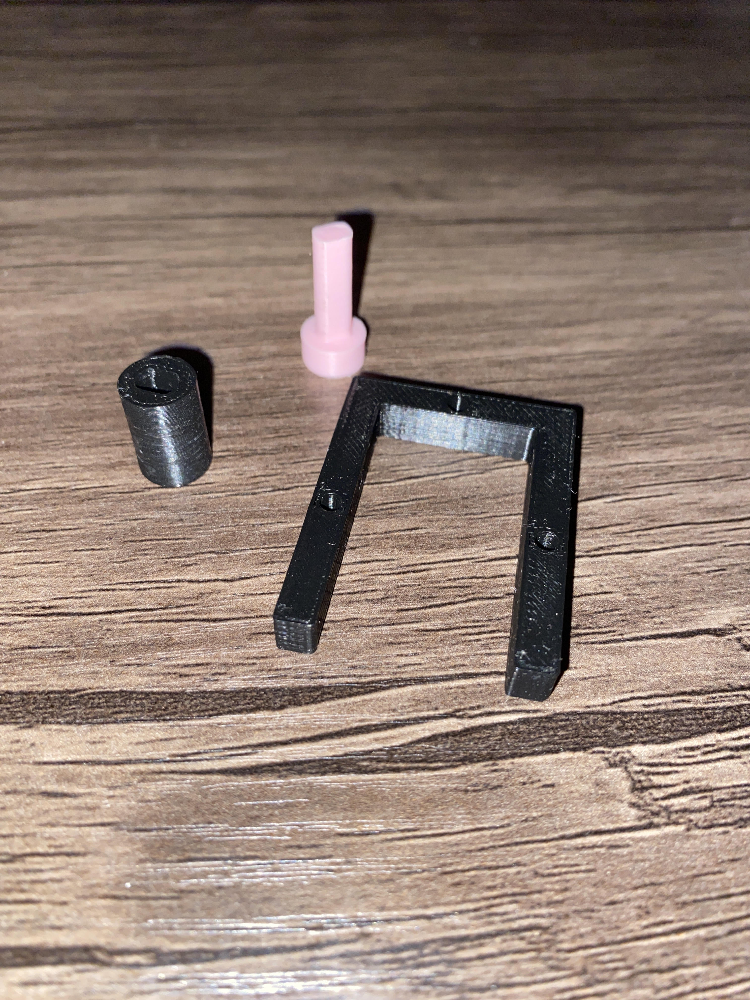

<br>
<h1>Week 3: Electronics and Tools</h1>
<h2>Kinetic Sculpture</h2>
<br>
<video width="320" height="240" controls class="center">
<source src="Kinetic.MOV" type="video/mp4">
Your browser does not support the video tag.
</video>
<div>
<p>
I wanted to incorporate elements of spiral rotation into my final project, and at the time I believed the best
way to do that was to design the rotation around a central axis using the yellow DC motor, driven by an electronic control module.
In Fusion 360 I modeled the foundation that my sculpture would rest on, and the sculpture's base would lay atop it like a disc.
I measured and modeled the size of the motor by referencing the documentation for its precise dimensions and unique irregularities
such as a small protruding cylinder that would help stabilize the motor if accounted for, but could also prevent the
motor from laying flat, or even worse, puncturing a hole through the top of the wooden base.
<p>
I then modeled a housing structure that would encase the outer edge of the motor, which had to fit tightly enough to
prevent any movement from occurring, and I had to model screw holes that would align exactly with the holes on the
edge of the motor. I made multiple iterative 3D prints of the motor attachment and housing unit to make sure the
measurements were as precise and form-fitting as could possibly be. This required making minor adjustments to all
dimensions of the objects' designs to determine which were most optimal, given the unique peculiarities of the 3D printing process.
</p>

</p>
</div>